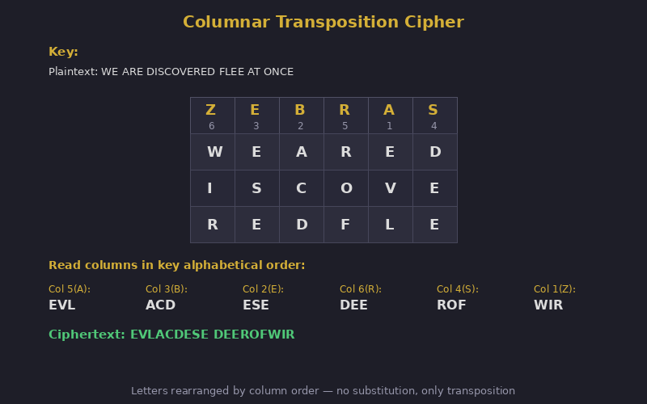

Columnar Transposition
Write in rows, read by columns — letter frequencies preserved, positions scrambled
Why This Matters
Columnar transposition was the workhorse of 19th-century military cryptography — simple enough to perform in the field without equipment, yet resistant enough to casual interception to protect battlefield communications through World War I.
Columnar transposition became the workhorse of 19th-century military cryptography. Simple enough to perform in the field without equipment, it resists casual interception while remaining fast to encrypt and decrypt. The system was used by various military forces throughout the 1800s and into WWI, often combined with substitution ciphers for added security.
Write the message in rows across a grid whose width is the keyword length. Number the columns by alphabetical order of the keyword letters. Read off columns in that numbered order.
Keyword: ZEBRA → Z=5, E=3, B=2, R=4, A=1
Columns: 5 3 2 4 1
W E A T H
E R F O R
E C A S T
I N G X X
Read col 1(A): HRTX
Read col 2(B): AFAG
Read col 3(E): ERCN
Read col 4(R): TOSX
Read col 5(Z): WEEI

Because transposition preserves all original letters, the ciphertext has the same letter frequency distribution as English plaintext. This immediately identifies it as a transposition cipher. With enough ciphertext, the column width can be determined and columns rearranged using digram/trigram frequency analysis.
| Concept from Columnar Transposition | Modern Evolution |
|---|---|
| Column reordering | AES ShiftRows: cyclic column position shifts |
| Grid-based permutation | Network permutation layers in Feistel ciphers |
| Keyword-controlled order | Key-scheduled permutation in AES key expansion |
| Exhibit | 13 of 40 |
| Era | 19th Century |
| Security | Broken |
| Inventor | Various 19th century cryptographers |
| Year | ~1800s |
| Key Type | Column-ordering keyword |
| Broken By | Frequency analysis · Anagramming |
Classical transposition practice includes route systems, regular columnar, Myszkowski ordering, and compound forms such as double transposition. Each variant preserves letter frequencies while changing positional structure.
The Nihilist transposition family extends these ideas into numbered-grid operations, showing how small procedural tweaks can significantly change attack difficulty.